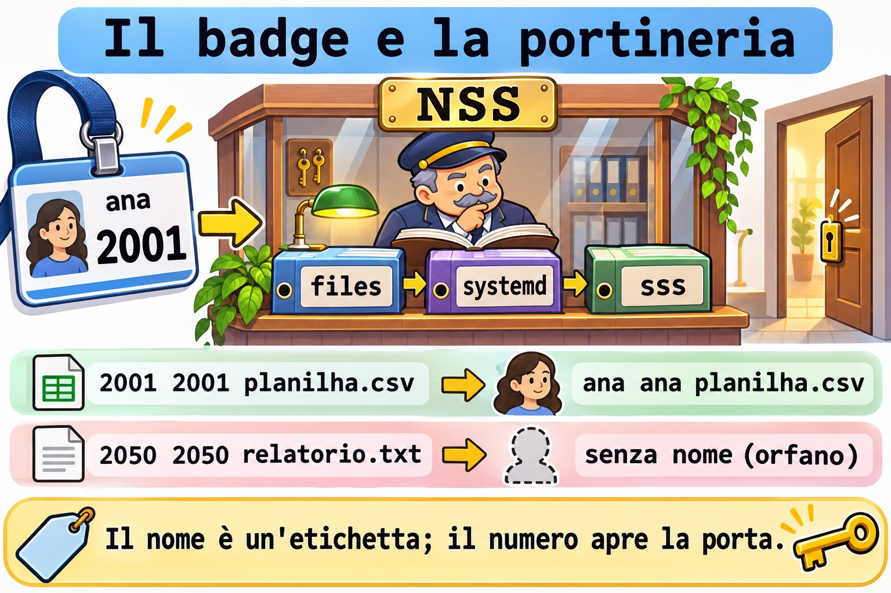
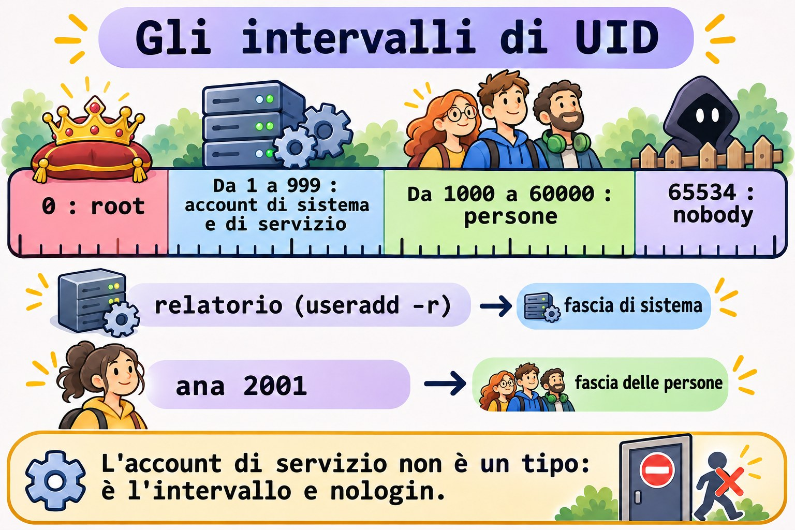
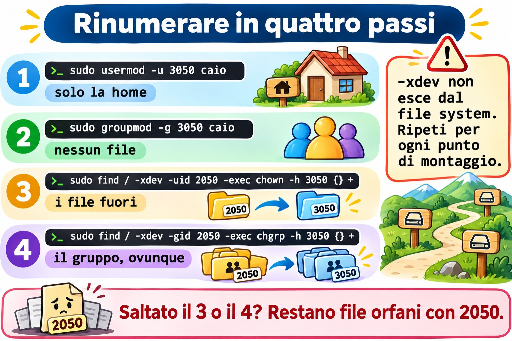

Lezione 10.1 · Account
In Windows un account è un SID: rinomini l'utente e non si rompe nulla, perché i permessi puntano al numero, non al nome. In Linux è uguale, solo che il numero si chiama UID ed è in vista. Nella Lezione 2.6 hai creato, modificato e cancellato account. In questa lezione vedi da dove il sistema prende gli account, crei account di servizio nel modo giusto, rinomini e rinumeri un utente senza lasciare file orfani, e crei account in blocco a partire da un elenco.
Il cuore di questa lezione: consultare gli account con
getent, che segue/etc/nsswitch.conf; leggere gli intervalli di UID in/etc/login.defs; creare un account di servizio conuseradd -rosystemd-sysusers; rinominare conusermod -l -d -megroupmod -n; rinumerare conusermod -uegroupmod -g, e sistemare il resto confind -uidefind -nouser. Il resto è approfondimento.
| Scheda | |
|---|---|
| Modulo | M10 · Utenti e accesso privilegiato, lezione 1 di 4 |
| Quando | Settimana 15 |
| Alla fine | Separi gli account delle persone da quelli dei servizi, cambi nome e numero di un account in sicurezza e trovi i file senza proprietario |
| Prerequisiti | Lezioni 2.6, 8.2 e 9.6 |
| Durata | circa 2h |
| Snapshot | m10a1-inicio e m10a1-fim su rocky-lab e debian-lab |
1 · Riscaldamento
Rispondi prima di leggere.
ls -lmostra2050al posto del nome del proprietario. Cosa è successo a quell'account?- Un servizio nuovo ha bisogno di un account. Deve avere una password? E una home?
- Ana è diventata Ana Souza e vuole il login
asouza. Cosa cambia nei suoi file?
2 · Perché conta
| La richiesta | La risposta sbagliata | Cosa provoca |
|---|---|---|
| "Cambia il login della stagista" | vipw e cambiare il nome a mano | La home, il gruppo e il crontab restano con il nome vecchio |
| "Gli UID non coincidono tra i server" | usermod -u e basta | I file fuori dalla home restano con il numero vecchio, senza proprietario |
| "Crea un account per il servizio dei report" | Un useradd relatorio normale | Account con Bash, home e UID da persona: un bersaglio facile |
| "Crea i 30 account del nuovo corso" | 30 comandi digitati a mano | Errori di battitura, UID duplicati, un account dimenticato |
"id fulano funziona e grep fulano /etc/passwd no" | Concludere che l'account non esiste | L'account arriva da un'altra fonte, come LDAP o SSSD |
3 · Modello mentale
Pensa a un badge con un numero. Il nome sul badge (il login) è solo un'etichetta che leggono le persone. Ciò che apre le porte è il numero (UID e GID), scritto in ogni file del disco. Cambiare il nome è ristampare il badge: le porte continuano ad aprirsi. Cambiare il numero è cambiare la serratura di chi ha il badge: ogni porta che aveva il numero vecchio va cambiata anche lei, una per una. E la portineria (l'NSS) può consultare più di un elenco di badge:
/etc/passwd, systemd o una directory aziendale.
quem pergunta quem responde (na ordem do /etc/nsswitch.conf)
id ana → NSS → files /etc/passwd, /etc/group, /etc/shadow
ls -l systemd contas dinâmicas e de fallback
getent passwd sss LDAP ou AD, via SSSD (quando existe)
o disco guarda só números: -rw-r--r-- 2001 2001 planilha.csv
o NSS traduz para nomes: -rw-r--r-- ana ana planilha.csv
sem tradução: -rw-r--r-- 2050 2050 relatorio.txt (órfão)

Ponte Windows
| In Windows | In Linux | Dove il paragone inganna |
|---|---|---|
| SID | UID e GID | L'UID è corto e lo scegli tu; due server possono dare lo stesso numero a persone diverse |
| Utenti locali (SAM) | /etc/passwd e /etc/shadow | Sono file di testo: si possono leggere, confrontare e versionare |
| Account di dominio (AD) | Account che arriva da SSSD, tramite NSS | Non compare in /etc/passwd, solo in getent |
NT SERVICE\..., account di servizio | Account di sistema, sotto 1000 | Non c'è un tipo speciale: è l'intervallo di UID e la shell nologin |
Rename-LocalUser | usermod -l | Linux non sposta la home da solo: serve -d -m |
Import-Csv e New-LocalUser | Ciclo while read con useradd | Linux ha anche newusers, che legge un file nel formato di passwd |
4 · L'essenziale
Chiedere alla portineria
| Voglio... | Comando |
|---|---|
| Un account, da qualsiasi fonte | getent passwd ana |
| Per numero | getent passwd 2001 |
| Solo dal file locale | getent -s files passwd ana |
| Un gruppo | getent group equipe |
| Le fonti configurate | grep -E '^(passwd|group|shadow):' /etc/nsswitch.conf |
grep su /etc/passwd vede solo il file. getent chiede come chiede il sistema, nell'ordine di nsswitch.conf. Su un server collegato a un dominio, solo getent mostra la verità.
Gli intervalli di numeri
| Intervallo | Chi lo usa | Dove si definisce |
|---|---|---|
| 0 | root | Fisso |
| Da 1 a 999 | Account di sistema e di servizio | SYS_UID_MIN e SYS_UID_MAX |
| Da 1000 a 60000 | Persone | UID_MIN e UID_MAX |
| 65534 | nobody | Fisso |
grep -E '^#?\s*(SYS_)?[UG]ID_(MIN|MAX)' /etc/login.defs

Account di servizio
sudo useradd -r -s /usr/sbin/nologin -d /var/lib/relatorio -M -c "Relatorios" relatorio-r prende l'UID dall'intervallo di sistema e non applica la scadenza della password. -M non crea la home. nologin rifiuta il login interattivo. L'account non riceve password: nessuno entra come lui, e il servizio gira con User=relatorio nella unit.
Il modo di systemd è dichiarare l'account in un file, e systemd-sysusers crea ciò che manca:
u coletor - "Coletor de metricas" /var/lib/coletor /usr/sbin/nologinIl - lascia scegliere l'UID al sistema. I pacchetti portano i loro file in /usr/lib/sysusers.d/; i tuoi stanno in /etc/sysusers.d/.
Rinominare: il nome cambia, il numero resta
sudo usermod -l caio -d /home/caio -m estag # nuovo login, nuova home, sposta il contenuto
sudo groupmod -n caio estag # anche il gruppo personale ha un nomeusermod -l non rinomina ciò che è salvato per nome: il crontab in /var/spool/cron/, le regole di sudoers, la casella di posta e gli script che citano il login.
Rinumerare: il numero cambia, i file no
| Passo | Comando | Cosa fa |
|---|---|---|
| 1 | sudo usermod -u 3050 caio | Cambia l'UID e sistema solo i file dentro la home |
| 2 | sudo groupmod -g 3050 caio | Cambia il GID del gruppo; non sistema nessun file |
| 3 | sudo find / -xdev -uid 2050 -exec chown -h 3050 {} + | Sistema i file fuori |
| 4 | sudo find / -xdev -gid 2050 -exec chgrp -h 3050 {} + | Sistema il gruppo, anche dentro la home |
-xdev non esce dal file system di partenza: ripeti per ogni punto di montaggio (/srv/app, /boot, i volumi dati). L'account non può avere processi in esecuzione.


Trovare gli orfani
sudo find / -xdev \( -nouser -o -nogroup \) -ls 2>/dev/nullRocky × Debian
| Rocky | Debian | |
|---|---|---|
Chi scrive nsswitch.conf | authselect (Lezione 10.2): non modificarlo a mano | Tu, direttamente nel file |
Fonti di passwd | files, systemd e, se c'è SSSD, sss | files e systemd |
SYS_UID_MIN | 201, attivo in login.defs | Commentato: vale il default di useradd |
Password di un account nuovo, prima di passwd | !! in shadow | ! in shadow |
nologin | /usr/sbin/nologin (e /sbin/nologin, lo stesso file) | /usr/sbin/nologin |
| Crontab degli utenti | /var/spool/cron/NOME | /var/spool/cron/crontabs/NOME |
| Strumento amichevole | Solo useradd | adduser, che chiede tutto (Lezione 2.6) |
5 · Lab guidato
Passo 0 · Snapshot e stato. In Proxmox: qm snapshot 201 m10a1-inicio e qm snapshot 202 m10a1-inicio. Su rocky-lab, controlla cosa hanno lasciato le lezioni precedenti:
getent passwd ana bruno
getent group equipe
sudo ls -ld /srv/equipeAna (2001) e Bruno (2002) devono comparire, entrambi nel gruppo equipe (2000), e /srv/equipe deve essere drwxrws--T root equipe. Se Ana è sparita da rocky-lab (una versione vecchia della sfida della 8.5 la cancellava), ricreala con lo stesso numero:
sudo useradd -u 2001 -c "Ana Lima" -m -s /bin/bash -G equipe anaPasso 1 · La portineria.
grep -E '^(passwd|group|shadow):' /etc/nsswitch.conf
getent passwd student
getent -s files passwd student
getent passwd | wc -l
wc -l < /etc/passwdI due conteggi di solito coincidono. Se getent ne conta di più, ci sono account che arrivano da un'altra fonte. Ora chiedi un account che non è nel file:
getent -s files passwd nobody
getent passwd 65534Su entrambe le VM nobody è in /etc/passwd. In un sistema minimale senza di lui, il modulo systemd dell'NSS risponderebbe da solo: è per questo che è nell'elenco.
Passo 2 · Gli intervalli.
grep -E '^#?\s*(SYS_)?[UG]ID_(MIN|MAX)' /etc/login.defs
getent passwd | awk -F: '$3 >= 1000 && $3 < 60000 {print $3, $1}' | sort -n
getent passwd | awk -F: '$3 < 1000 {print $3, $1, $7}' | sort -n | headIl secondo comando elenca le persone, il terzo gli account di sistema. Guarda l'ultima colonna del terzo: quasi tutti con nologin o false.
Passo 3 · Due account di servizio.
sudo useradd -r -s /usr/sbin/nologin -d /var/lib/relatorio -M -c "Relatorios" relatorio
getent passwd relatorio
sudo chage -l relatorio | head -n 3L'UID esce sotto 1000, la cartella non esiste e la password non scade mai. Ora con systemd:
command -v systemd-sysusers
ls /usr/lib/sysusers.d/ | head
echo 'u coletor - "Coletor de metricas" /var/lib/coletor /usr/sbin/nologin' | sudo tee /etc/sysusers.d/coletor.conf
sudo systemd-sysusers /etc/sysusers.d/coletor.conf
getent passwd coletor
ls -ld /var/lib/coletorL'ultimo ls risponde No such file or directory: systemd-sysusers crea l'account, non la cartella. A creare la cartella è la unit del servizio, con StateDirectory=coletor, oppure un tmpfiles.d. Lancia di nuovo systemd-sysusers: non fa nulla, perché l'account esiste già. È questo che permette a ogni pacchetto di dichiarare gli account che gli servono senza paura di duplicarli.
Passo 4 · Rinominare. Crea l'account della stagista e un suo file fuori dalla home:
sudo useradd -u 2050 -c "Estagiaria" -m -s /bin/bash estag
sudo install -d -m 1777 /srv/lab101
sudo -u estag touch /srv/lab101/relatorio.txt
echo '0 8 * * 1 echo bom dia' | sudo crontab -u estag -È stata assunta e si chiamerà caio:
sudo usermod -l caio -d /home/caio -m estag
sudo groupmod -n caio estag
getent passwd caio
ls -ld /home/caio
ls -l /srv/lab101
sudo crontab -l -u caioLa cartella ha cambiato nome, e il file fuori compare come caio caio: il numero non è cambiato, e il disco salva solo il numero. Il crontab non compare con il nome nuovo: no crontab for caio. È nel file vecchio:
sudo ls /var/spool/cron/ # Rocky
sudo ls /var/spool/cron/crontabs/ # DebianIl file ha ancora il nome estag. Spostalo sul nome nuovo e controlla:
sudo mv /var/spool/cron/estag /var/spool/cron/caio # Rocky
sudo mv /var/spool/cron/crontabs/estag /var/spool/cron/crontabs/caio # Debian
sudo crontab -l -u caioPasso 5 · Rinumerare. I server del team usano l'intervallo 3000 per le persone assunte. caio passa da 2050 a 3050:
sudo usermod -u 3050 caio
sudo groupmod -g 3050 caio
ls -ln /home/caio /srv/lab101
sudo find / -xdev \( -nouser -o -nogroup \) -ls 2>/dev/nullNella home, il proprietario è diventato 3050 e il gruppo resta 2050: groupmod non tocca i file. In /srv/lab101, proprietario e gruppo restano 2050: usermod non esce dalla home. find trova gli orfani. Sistema:
sudo find / -xdev -uid 2050 -exec chown -h 3050 {} +
sudo find / -xdev -gid 2050 -exec chgrp -h 3050 {} +
sudo find / -xdev \( -nouser -o -nogroup \) -ls 2>/dev/null
ls -l /home/caio /srv/lab101L'ultimo find torna vuoto, e tutto compare come caio caio. Se /srv/app della 9.6 avesse file di caio, -xdev li avrebbe saltati: lì è un altro file system, e find deve partire anche da lì.
Passo 6 · Account in blocco. Un elenco con login, UID e nome:
printf '%s\n' 'gil:2201:Gil Prado' 'helo:2202:Helo Dias' 'ivo:2203:Ivo Matos' | sudo tee /srv/lab101/novos.txt
while IFS=: read -r nome uid gecos; do
sudo useradd -u "$uid" -c "$gecos" -m -s /bin/bash "$nome" && echo "criada: $nome"
done < /srv/lab101/novos.txt
for u in gil helo ivo; do sudo passwd -S "$u"; doneI tre account nascono senza password: passwd -S mostra LK su Rocky e L su Debian. Nessuno entra finché non imposti una password, ed è lo stato giusto per un account appena creato. Rilancia il ciclo: ogni riga fallisce con user 'gil' already exists, e nulla si duplica.
Passo 7 · subuid. Ogni persona creata da useradd riceve anche un intervallo di numeri extra, che i container senza root (M18) useranno:
grep -E '^(ana|caio|gil):' /etc/subuid /etc/subgidOgni riga dice nome:início:quantidade, come gil:100000:65536. Gli intervalli non si sovrappongono. Se Ana non compare, è stata creata prima che il sistema avesse /etc/subuid: annotalo per l'M18.
Passo 8 · debian-lab. Ripeti i passi da 0 a 7. Al Passo 4, usa il percorso del crontab di Debian.
Decidi 1
caio riceverà la cartella di un altro team via NFS, e lì il suo UID è 3050. Sulla tua macchina è 2050. Cosa fai?
A) Solo usermod -u 3050 caio. B) usermod -u e groupmod -g, e poi find -uid e find -gid su ogni file system. C) Creare un secondo account con UID 3050.
Scegli un'opzione prima di continuare.
| Se hai scelto | Risultato | Perché |
|---|---|---|
| A | A metà | I file fuori dalla home e il gruppo restano con il numero vecchio |
| B | Giusto | Cambia i numeri e sistema tutto il disco |
| C | Confusione | Due account per la stessa persona, e i file divisi tra loro |
Da ricordare: il disco salva numeri. Hai cambiato il numero, sistema il disco.
Decidi 2
Un nuovo servizio di backup ha bisogno di un account. Quale comando?
A) useradd backupsvc. B) useradd -r -s /usr/sbin/nologin -M backupsvc. C) Far girare il servizio come root, che è più semplice.
Scegli un'opzione prima di continuare.
| Se hai scelto | Risultato | Perché |
|---|---|---|
| A | Debole | UID da persona, Bash e home: chi scopre la password entra |
| B | Giusto | Intervallo di sistema, senza login e senza cartella |
| C | Pericoloso | Un difetto nel servizio diventa l'intero server |
Da ricordare: un servizio ha un account suo, senza login.
6 · Rompi e ripara
Guasto 1 · Il numero che ha già un proprietario
sudo useradd -u 2001 -m -s /bin/bash testeSintomo: useradd: UID 2001 is not unique.
Indagine: getent passwd 2001 mostra Ana.
Causa: ogni UID appartiene a un solo account. useradd -o permetterebbe di duplicarlo, ed è quasi sempre un errore: per il kernel i due account diventano la stessa persona.
Riparazione: scegli un numero libero. Per vedere il prossimo dell'intervallo: getent passwd | awk -F: '$3 >= 2000 && $3 < 3000 {print $3}' | sort -n | tail -n 1.
Guasto 2 · L'account in uso
sudo systemd-run --uid=gil --unit=lab101 sleep 600
sudo usermod -l gilberto gilSintomo: usermod: user gil is currently used by process seguito da un numero.
Indagine: ps -u gil -o pid,cmd mostra lo sleep.
Causa: usermod rifiuta di cambiare nome, numero o cartella di un account con processi attivi, perché continuerebbero con l'identità vecchia.
Riparazione: ferma ciò che sta girando (sudo systemctl stop lab101, oppure sudo loginctl terminate-user gil per le sessioni) e ripeti. Nella vita reale, questo rientra nella finestra di manutenzione. Rimetti il nome: sudo usermod -l gil gilberto.
Guasto 3 · Il gruppo che è ancora di qualcuno
sudo groupdel caioSintomo: groupdel: cannot remove the primary group of user 'caio'.
Indagine: id caio e getent passwd caio: il quarto campo è 3050, il GID del gruppo caio.
Causa: un gruppo che è il principale di qualcuno non può sparire: l'account resterebbe con un GID senza nome.
Riparazione: cancella prima l'account (userdel cancella insieme il gruppo personale) oppure cambia il suo gruppo principale con usermod -g. Qui il gruppo resta: ci pensa la pulizia.
Pulizia
sudo systemctl stop lab101 2>/dev/null
for u in caio gil helo ivo; do sudo userdel -r "$u"; done
sudo userdel relatorio
sudo userdel coletor
sudo rm /etc/sysusers.d/coletor.conf
sudo rm -r /srv/lab101
sudo find / -xdev \( -nouser -o -nogroup \) -ls 2>/dev/null
getent passwd ana brunouserdel -r caio può avvisare caio mail spool (/var/spool/mail/caio) not found: non aveva posta, e l'avviso è innocuo. find deve tornare vuoto, e Ana e Bruno restano come erano.
7 · Trappole
| Trappola | Cosa succede | Come evitarla |
|---|---|---|
Controllare un account con grep /etc/passwd | Non vede gli account di SSSD | getent passwd |
Modificare nsswitch.conf su Rocky | authselect lo riscrive | authselect (Lezione 10.2) |
usermod -l senza -d -m | La cartella resta con il nome vecchio | Sempre -l NOVO -d /home/NOVO -m |
| Dimenticare il gruppo personale | Login nuovo, gruppo con il nome vecchio | groupmod -n subito dopo |
usermod -u e basta | I file fuori dalla home restano orfani | find -uid su ogni file system |
find / senza -xdev | Scende in /proc e nelle condivisioni di rete | -xdev e un find per mount |
Account di servizio con un useradd normale | Bash, home e password che scade | useradd -r -s /usr/sbin/nologin -M |
useradd -o | Due account con lo stesso numero | Mai, salvo un motivo raro e documentato |
8 · Quiz
Rispondi senza guardare. Le soluzioni sono alla fine della lezione.
- Perché
getent passwdpuò mostrare un account che/etc/passwdnon ha? - In quale intervallo cade l'UID di un account creato con
useradd -r, e perché? - Cosa fa
systemd-sysusersse l'account esiste già? - Dopo
usermod -l caio -d /home/caio -m estag, cosa resta ancora con il nome vecchio? - Dopo
usermod -u, quali file restano con il numero vecchio? - A cosa serve
-xdevnelfinddegli orfani?
9 · Promemoria
Da sapere a memoria:
| Voglio... | Comando |
|---|---|
| Consultare un account | getent passwd NOME |
| Account di servizio | sudo useradd -r -s /usr/sbin/nologin -M NOME |
| Rinominare | sudo usermod -l NOVO -d /home/NOVO -m VELHO e sudo groupmod -n NOVO VELHO |
| Rinumerare | sudo usermod -u NOVO NOME e sudo groupmod -g NOVO NOME |
| Sistemare il disco | sudo find / -xdev -uid VELHO -exec chown -h NOVO {} + |
| Trovare gli orfani | sudo find / -xdev \( -nouser -o -nogroup \) -ls |
Da consultare:
| Voglio... | Comando |
|---|---|
| Solo il file locale | getent -s files passwd NOME |
| Fonti dell'NSS | grep -E '^(passwd|group):' /etc/nsswitch.conf |
| Intervalli di UID | grep -E '^#?\s*(SYS_)?[UG]ID_(MIN|MAX)' /etc/login.defs |
| Dichiarare un account (systemd) | /etc/sysusers.d/NOME.conf e sudo systemd-sysusers |
| Stato della password | sudo passwd -S NOME |
| Intervalli di subuid | grep NOME /etc/subuid /etc/subgid |
Flashcard:
- UID → il numero che il disco salva.
- Login → l'etichetta che l'NSS traduce.
getent→ chiede come chiede il sistema.useradd -r→ intervallo di sistema, senza scadenza.- Rinominare → il numero resta, la cartella cambia con
-d -m. - Rinumerare → il disco non segue:
find -uid.
10 · Checklist e chiusura
- [ ] Consulto gli account con
getente so da quali fonti arrivano - [ ] Leggo gli intervalli di UID e separo persone e servizi
- [ ] Creo un account di servizio con
useradd -re consystemd-sysusers - [ ] Rinomino un account con la cartella, il gruppo e il crontab
- [ ] Rinumero un account e sistemo i file con
find - [ ] Creo account in blocco da un elenco, senza duplicare
- [ ] Lascio Ana e Bruno come erano, e nessun orfano sul disco
Ultimo esercizio, senza guardare la lezione: su debian-lab, crea l'account di servizio filas, senza login e senza cartella, tramite /etc/sysusers.d/. Controlla l'UID e la shell, e cancella l'account e il file.
Snapshot di fine (in Proxmox):
qm snapshot 201 m10a1-fim
qm snapshot 202 m10a1-fim11 · Nella vita reale
Missione, sola lettura. Su un server Linux che amministri (o con autorizzazione), lancia solo:
grep -E '^(passwd|group):' /etc/nsswitch.conf
getent passwd | awk -F: '$3 >= 1000 && $3 < 60000 {print $3, $1, $7}' | sort -n
getent passwd | awk -F: '$3 < 1000 && $7 !~ /(nologin|false)$/ {print $3, $1, $7}'
sudo find / -xdev \( -nouser -o -nogroup \) 2>/dev/null | head -n 20Domande a cui rispondere:
- Gli account arrivano solo da file, o anche da un dominio?
- Qualche account di sistema ha una shell di login? Ne ha bisogno?
- Ci sono file orfani? Di quale numero, e di chi era quel numero?
12 · Approfondire quando vuoi
man nsswitch.conf,man getent: le fonti e l'ordine.man sysusers.d,man systemd-sysusers: il formato completo, con gruppi (g) e membri (m).man newusers: crea account in blocco da un file nel formato dipasswd, con password.man login.defs: tutti gli intervalli e i default diuseradd.
DeepTutor (http://10.1.0.149:3782, KB "Curso Linux Sysadmin"):
!explica UID, login e NSS com uma metáfora!feynman por que renumerar um usuário deixa arquivos órfãos!quiz Aula 10.1, 5 perguntas sobre contas
Soluzioni commentate
Riscaldamento
- L'account è stato cancellato o rinumerato, e il file è rimasto con il numero vecchio. L'NSS non trova un nome per 2050, e
lsmostra il numero. - No, e no. Un account di servizio non fa login: senza password, con
nologine senza home, a parte la cartella dati del servizio. - Nulla, se cambia solo il nome: i file salvano l'UID. Cambiano la home (se usi
-d -m), il gruppo personale (congroupmod -n) e ciò che è salvato per nome, come il crontab.
Quiz
- Perché
getentconsulta tutte le fonti dinsswitch.conf, come SSSD e systemd, e il file è solo una di esse. - Nell'intervallo di sistema, sotto 1000, tra
SYS_UID_MINeSYS_UID_MAX: così nessuno scambia l'account per una persona. - Nulla: crea solo ciò che manca. Per questo può girare sempre.
- Il crontab, le regole di
sudoers, la casella di posta e gli script che citano il login. Anche il gruppo personale, fino agroupmod -n. - Quelli fuori dalla home. E, dopo
groupmod -g, il gruppo di tutti i file, anche dentro la home. - Per non uscire dal file system di partenza: evita
/proc,/syse le condivisioni di rete. Ogni mount locale ha bisogno del suofind.